shmap-rs profiling charts, every architecture
x86_64 (a2), aarch64 (galaxy). Generated by benchmarks/scripts/crossarch.py; regenerate with it.
Charts are linked from each architecture's own result set rather than copied here, so what
you see is always the committed chart. Open this file from inside a checkout.
The publication document is artifacts.pdf beside this file; it carries the
tables and one representative pie pair. This page is for looking at all of them.
chart-B01-mapq.svg x86_64 aarch64 chart-B01-pruning.svg x86_64 aarch64 chart-B01-refine-memo.svg x86_64 aarch64 chart-B01-time-indexing.svg x86_64 aarch64
chart-B01-time-mapping.svg 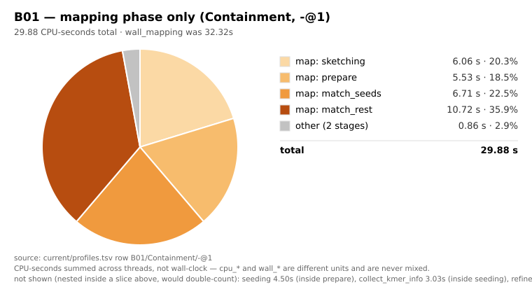
x86_64 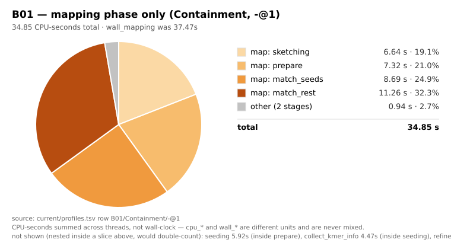
aarch64 chart-B01-time.svg 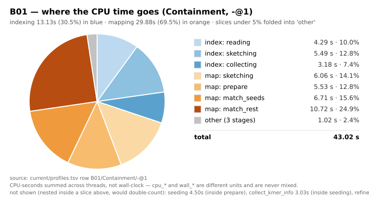
x86_64 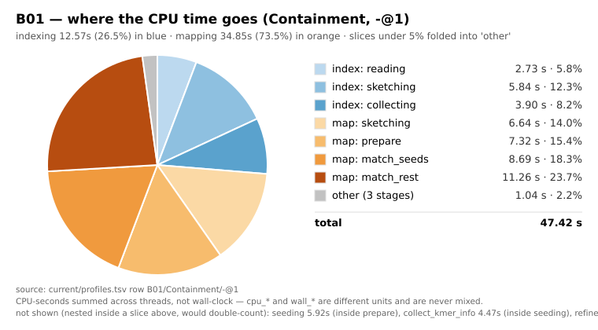
aarch64 chart-B02-mapq.svg x86_64 aarch64 chart-B02-pruning.svg x86_64 aarch64 chart-B02-refine-memo.svg x86_64 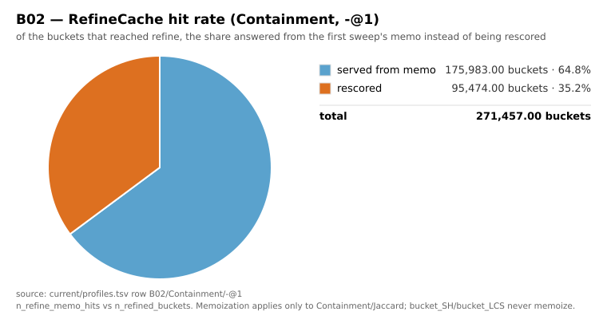
aarch64 chart-B02-time-indexing.svg 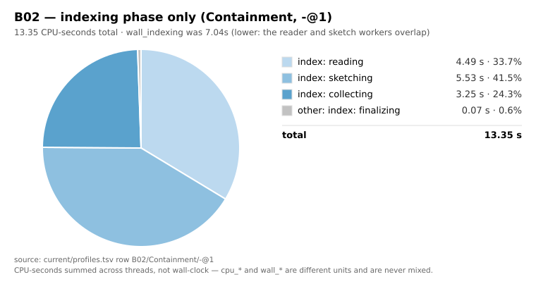
x86_64 aarch64 chart-B02-time-mapping.svg 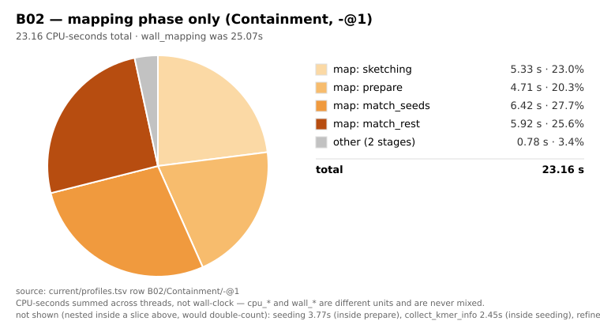
x86_64 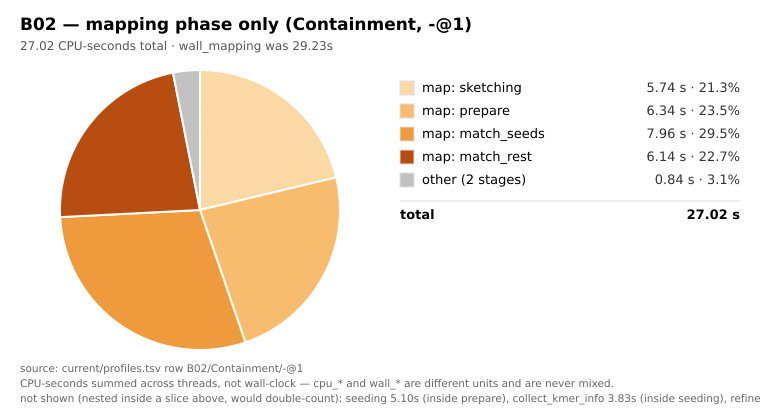
aarch64 chart-B02-time.svg 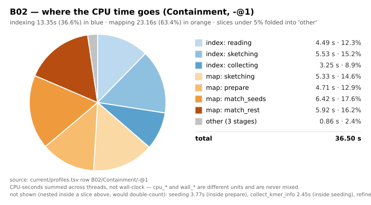
x86_64 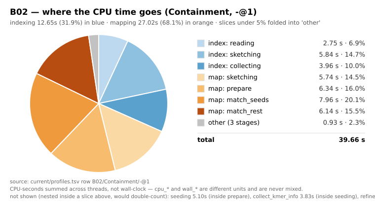
aarch64 chart-B03-mapq.svg 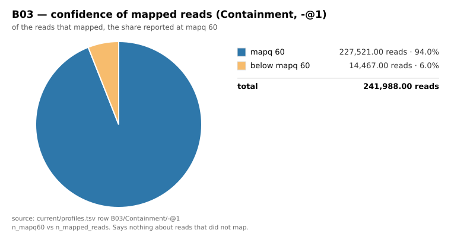
x86_64 aarch64 chart-B03-pruning.svg x86_64 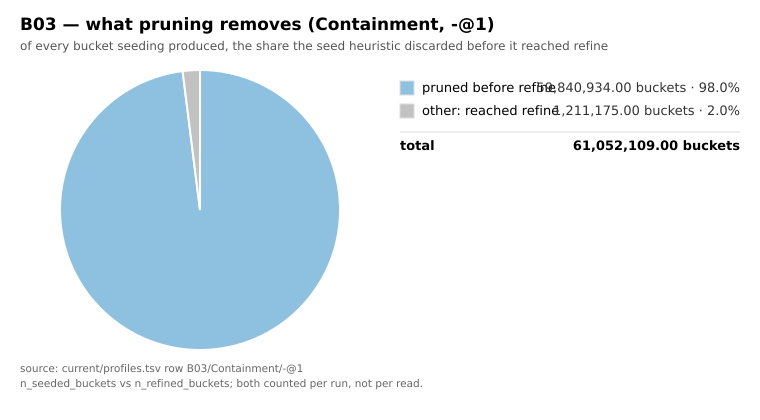
aarch64 chart-B03-refine-memo.svg x86_64 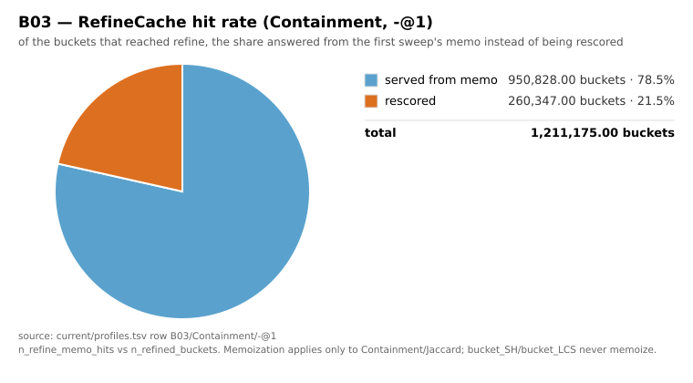
aarch64 chart-B03-time-indexing.svg x86_64 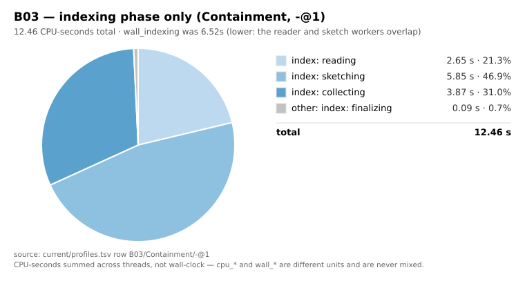
aarch64 chart-B03-time-mapping.svg 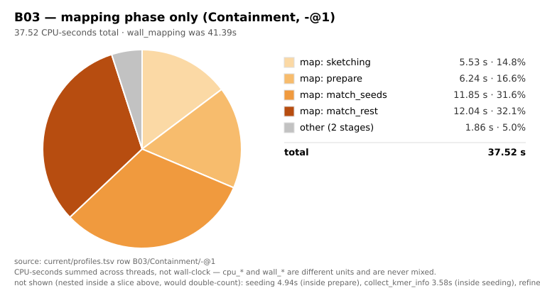
x86_64 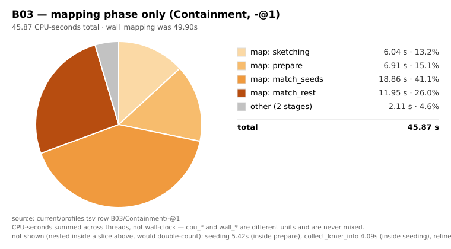
aarch64 chart-B03-time.svg 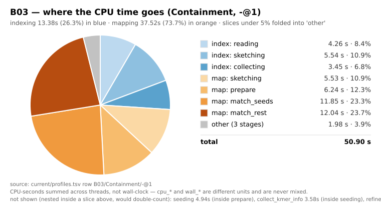
x86_64 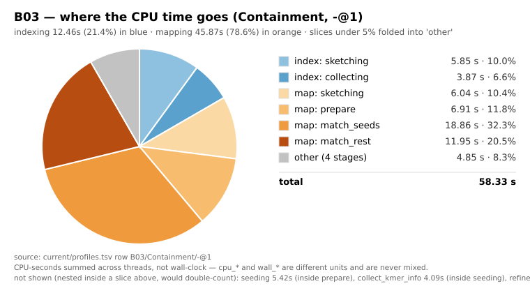
aarch64 chart-B04-mapq.svg x86_64 aarch64 chart-B04-pruning.svg x86_64 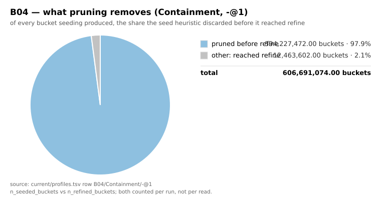
aarch64 chart-B04-refine-memo.svg x86_64 aarch64 chart-B04-time-indexing.svg x86_64 aarch64
chart-B04-time-mapping.svg 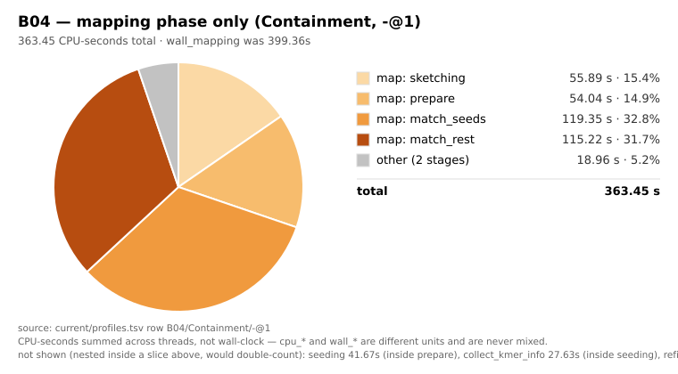
x86_64 aarch64 chart-B04-time.svg 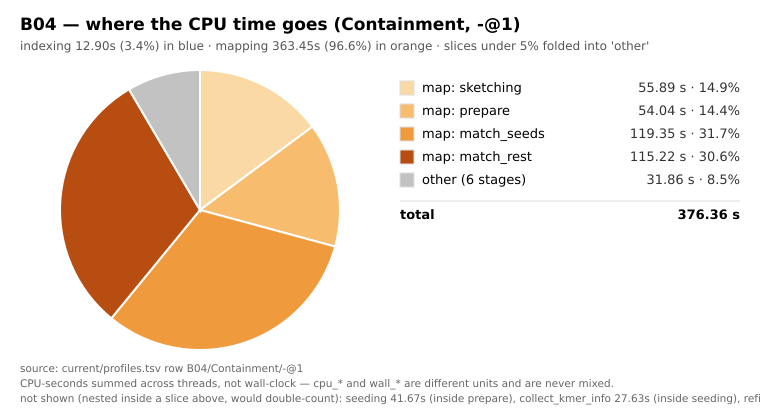
x86_64 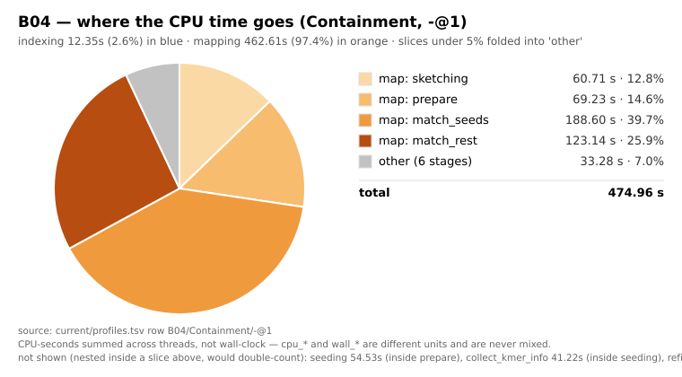
aarch64 chart-B05-mapq.svg 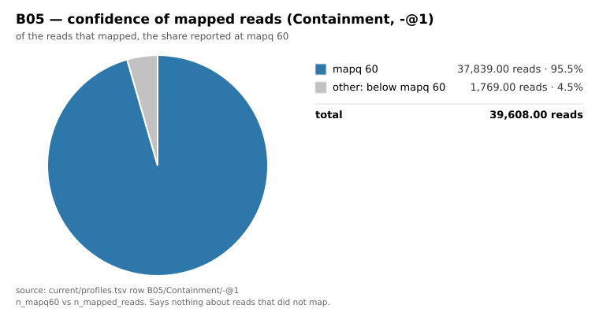
x86_64 aarch64 chart-B05-pruning.svg x86_64 aarch64 chart-B05-refine-memo.svg x86_64 aarch64 chart-B05-time-indexing.svg 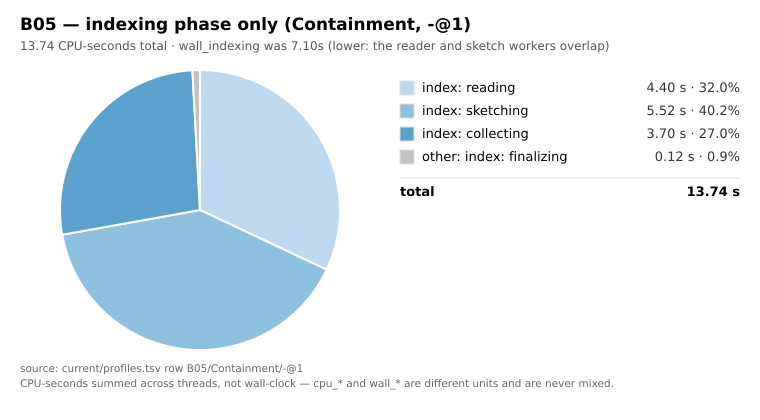
x86_64 aarch64 chart-B05-time-mapping.svg 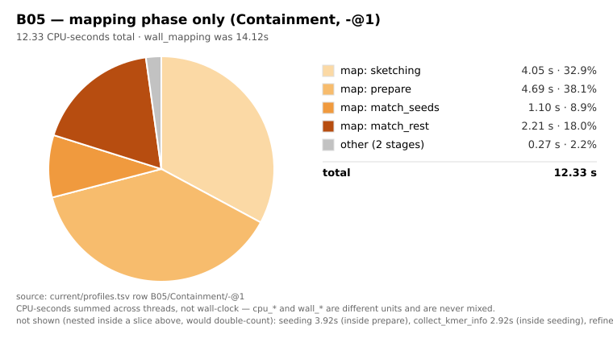
x86_64 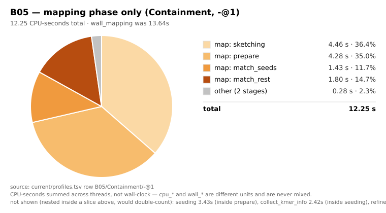
aarch64 chart-B05-time.svg 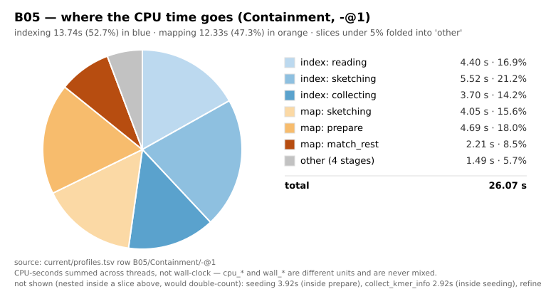
x86_64 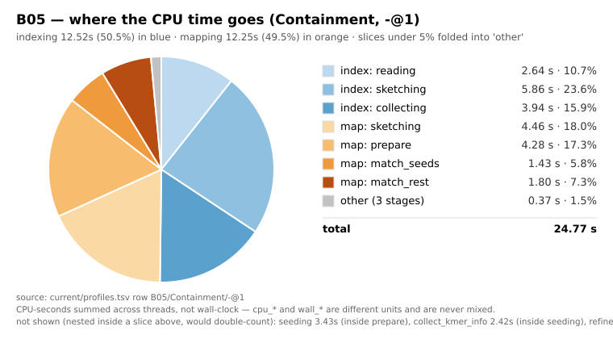
aarch64